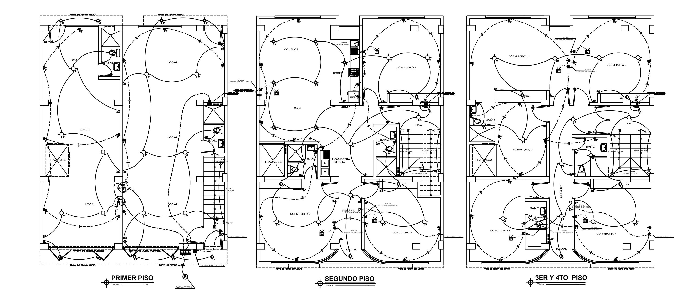
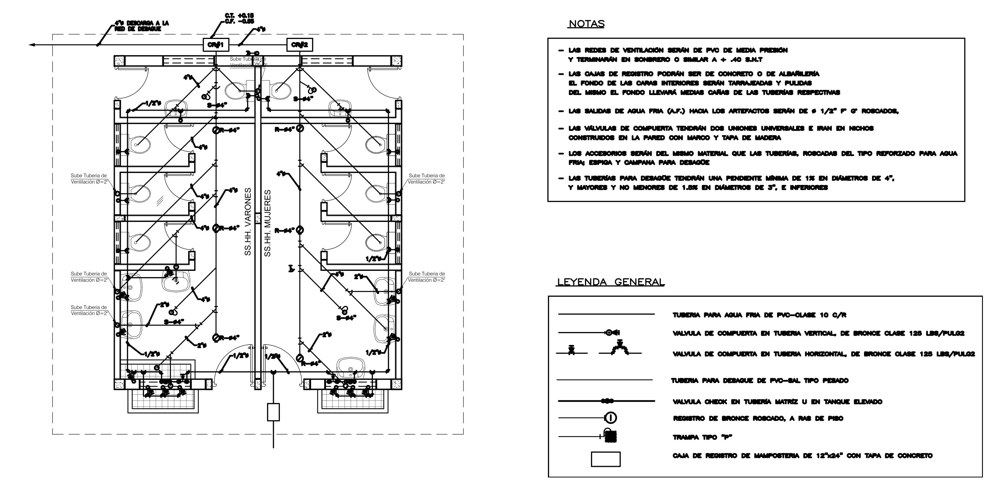
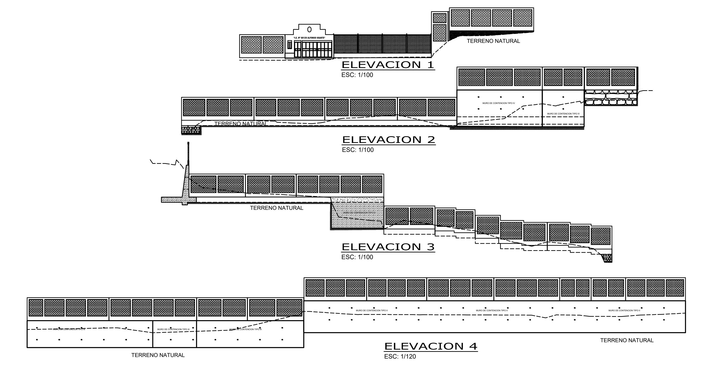
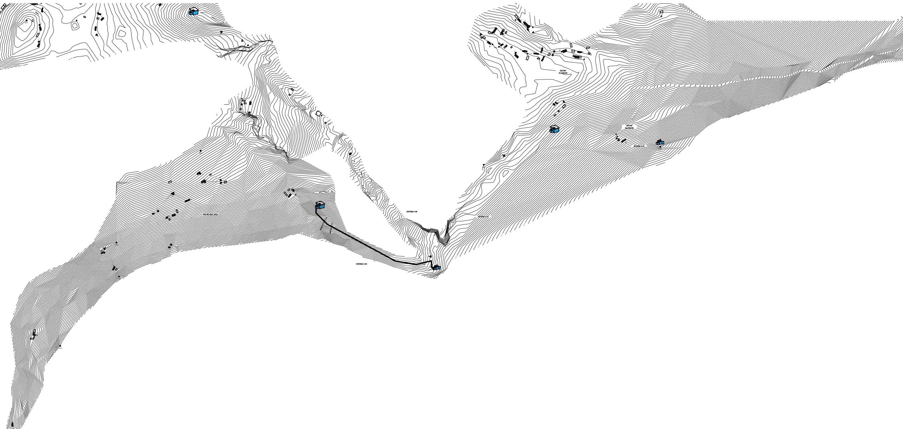
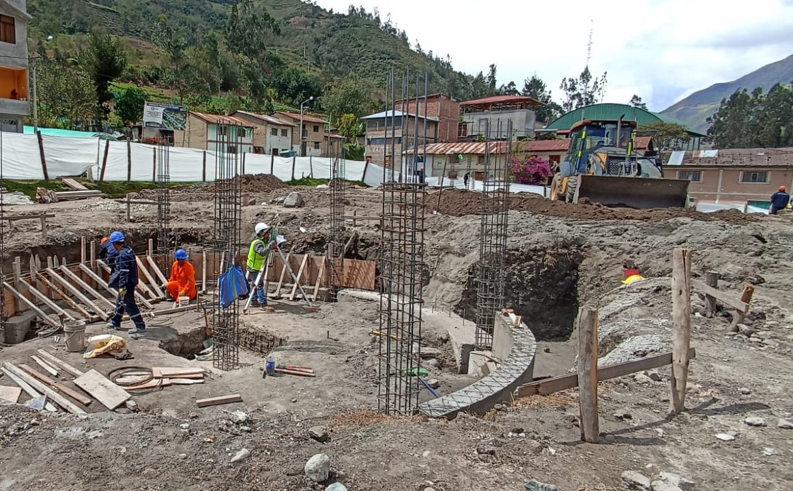

Dibujo CAD (AUTOCAD ARCHITECTURE - LISP - LAYOUTS - LAYERS)
Plano de Arquitectura - ejm.Techo propio

Plano de Instalaciones Electricas- ejm.Vivienda multifamiliar

Plano de Instalaciones Sanitarias - ejm.Modulos sshh, Colegio

Elevaciones - ejm.Cerco perimetrico

Topografia (CIVIL 3D - ARCGIS)
Levantamiento Topografico

Trazo y Replanteo - Estacion LEYCA TS06

Analisis Estructural (SAP - ETABS - SAFE - MATHCAD)
Hojas de calculo en MathCad
Simulacion
Memoria de calculo
Mecanica de Suelos (GEO5)
Ensayo cono de arena,Determinar densidad ASTM D1556


Taludes (SLIDE - PLAXIS) y Muro Contencion (GEO5)
En aprendisaje
Estabilizacion de Taludes
Muros de Contencion
Saneamiento Rural(WATERCAD - CIVIL3D)
En aprendisaje
Cubiertas Metalicas (SAP2000)
Estructuras Metalicas(TEKLA - SAP)
En aprendisaje
Cubiertas Metalicas (SAP2000)
Reservorio